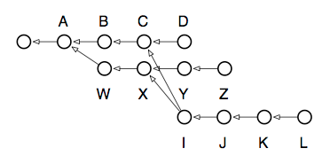
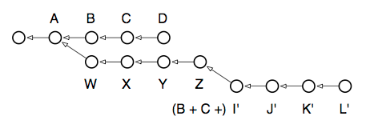

Interactive rebasing
When rebase was run above, it automatically rewrote all the commits from W to Z in order to rebase the Z branch onto the D commit (i.e., the head commit of the D branch). You can, however, take complete control over how this rewriting is done. If you supply the -i option to rebase, it will pop you into an editing buffer where you can choose what should be done for every commit in the local Z branch:
pick — This is the default behavior chosen for every commit in the branch if you don’t use interactive mode. It means that the commit in question should be applied to its (now rewritten) parent commit. For every commit that involves conflicts, the
rebasecommand gives you an opportunity to resolve them.squash — A squashed commit will have its contents “folded” into the contents of the commit preceding it. This can be done any number of times. If you took the example branch above and squashed all of its commits (except the first, which must be a pick in order to squash), you would end up with a new
Zbranch containing only one commit on top ofD. Useful if you have changes spread over multiple commits, but you’d like the history rewritten to show them all as a single commit.edit — If you mark a commit as edit, the rebasing process will stop at that commit and leave you at the shell with the current working tree set to reflect that commit. The index will have all the commit’s changes registered for inclusion when you run
commit. You can thus make whatever changes you like: amend a change, undo a change, etc.; and after committing, and runningrebase --continue, the commit will be rewritten as if those changes had been made originally.(drop) — If you remove a commit from the interactive rebase file, or if you comment it out, the commit will simply disappear as if it had never been checked in. Note that this can cause merge conflicts if any of the later commits in the branch depended on those changes.
The power of this command is hard to appreciate at first, but it grants you virtually unlimited control over the shape of any branch. You can use it to:
- Collapse multiple commits into single ones.
- Re-order commits.
- Remove incorrect changes you now regret.
- Move the base of your branch onto any other commit in the repository.
- Modify a single commit, to amend a change long after the fact.
I recommend reading the man page for rebase at this point, as it contains several good examples how the true power of this beast may be unleashed. To give you one last taste of how potent a tool this is, consider the following scenario and what you’d do if one day you wanted to migrate the secondary branch L to become the new head of Z:

The picture reads: we have our main-line of development, D, which three commits ago was branched to begin speculative development on Z. At some point in the middle of all this, back when C and X were the heads of their respective branches, we decided to begin another speculation which finally produced L. Now we’ve found that L’s code is good, but not quite good enough to merge back over to the main-line, so we decide to move those changes over to the development branch Z, making it look as though we’d done them all on one branch after all. Oh, and while we’re at it, we want to edit J real quick to change the copyright date, since we forgot it was 2008 when we made the change! Here are the commands needed to untangle this knot:
$ git checkout L $ git rebase -i Z
After resolving whatever conflicts emerge, I now have this repository:

As you can see, when it comes to local development, rebasing gives you unlimited control over how your commits appear in the repository.